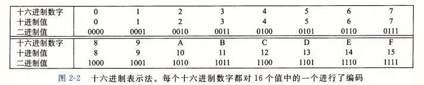
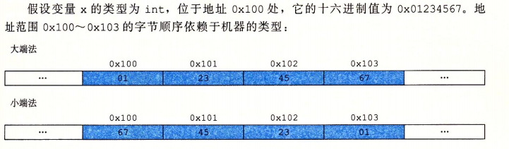
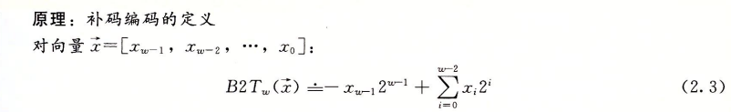
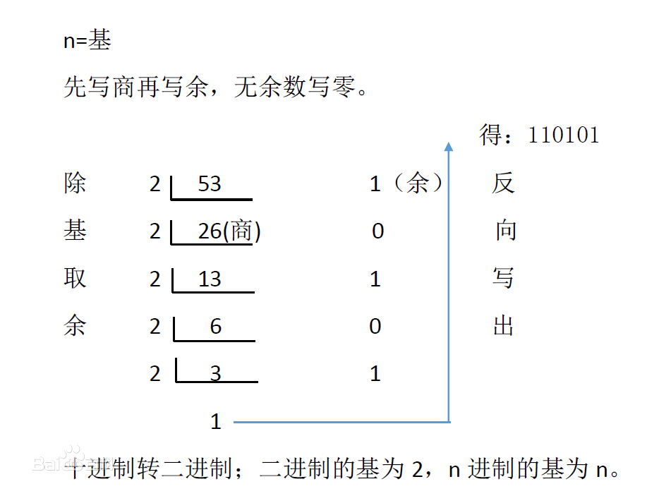
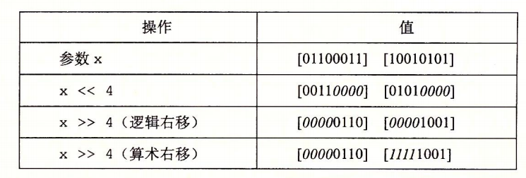
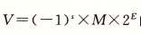
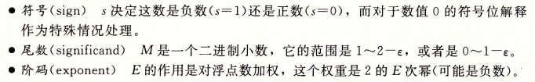
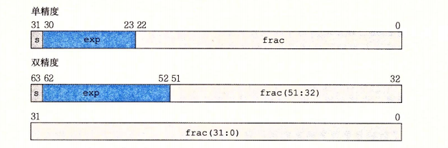
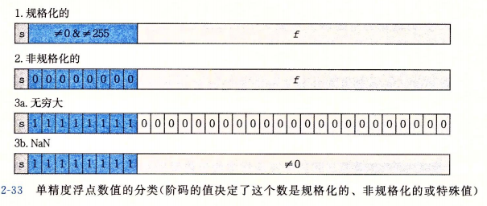
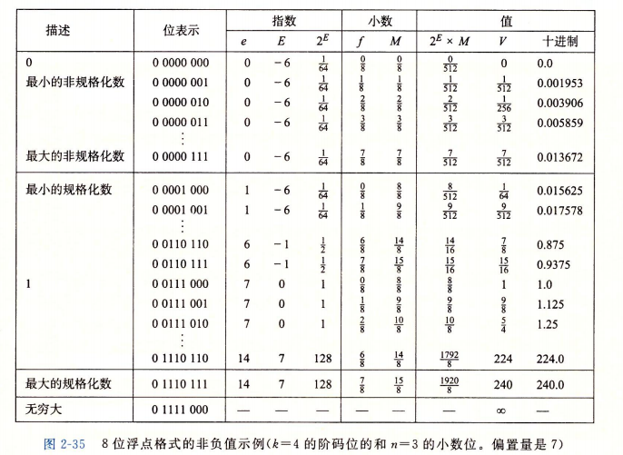

[TOC]
0. 前言
只记载重难点内容。
1. 进制转换
计算机系统中，以二进制和十六进制最为重要，其转换如下：

2. 寻址和字节顺序
多字节对象被存储为连续的字节序列，对象的地址为所使用字节中的最小地址。假设一个
int类型变量x，其地址&x为0x100，那么x的4个字节将被存储在0x100,0x101,0x102,0x103的内存位置。小端法，最低有效字节(LSB)在最前面(小地址)；大端法，最高有效字节(MSB)在最前面。示例：

3. 补码
计算机的二进制表示都是采用补码的形式。
二进制补码转十进制公式：

最高有效位 $X_w-1$ 为符号位，权重为 $-2^{w-1}$。其它第 $i$ 位权重则为 $2^{i}$。
十进制转二进制补码：
先计算十进制对应二进制原码：

若是正数，则 补码 = 原码，即 $[x]补 = [x]原$
若是负数，则 补码 = 原码 取反 再加一，即 $[x]补 = ~[x]原 + 1$
4. C语言中的移位运算
算术右移，补符号位
逻辑右移，补零
对于有符号数，右移则为算术右移；对于无符号数，则为逻辑右移。

5. 浮点数
以IEEE浮点数标准为主。
5.1. 二进制浮点数标准形式


示例：
如二进制小数：$$-1011.101$$
标准化后变为：$$ (-1)^1 \times 0.1011101(或1.011101) \times 2^5(或2^4)$$
5.2. 浮点数的位级表示

s字段，表示符号位
exp字段，表示阶码
face字段，表示尾数
5.3. 浮点数编码对应的值

5.3.1. 规格化的值
条件：当exp字段既不全为0，也不全为1时。
阶码的值 $$E = exp - Bias$$ Bias为偏置常数，其值 $Bias = 2^{k-1} - 1$，
k为浮点数的位数。所以，单精度 $Bias = 127$，双精度 $Bias = 1023$；单精度 $E$ 的取值范围为 $-126 至 127$，双精度 $E$ 的取值范围为 $-1022 至 1023$设置偏置常数，保证exp字段为无符号(不需要考虑补码)，方便浮点数间的运算。
尾数的值 $$M = 1 + 0.face$$ 比如：face字段的值为$101000…000$，那么尾数的值 $M = 1.101000…000$
尾数部分隐含以1开头，因为我们总可以把$M$看成$1.f_{n-1}f_{n-2}…f_{0}$的二进制形式，相当于科学记数法。这种表示方法轻松获得额外精度位，同时由于第一位总是$1$，我们就不需要显式地表示它了。
5.3.2. 非规格化的值
条件：当exp字段全为0时。
阶码的值$$E = 1 - Bias$$对于单精度或者双精度浮点数，这个值时固定的。
为什么时 $1 - Bias$，而不是 $-Bias$？因为这样提供了一种非规格数向规格化数平滑过渡的方法。
尾数的值$$M = 0.face$$
非规格化值的作用：
提供可以表示数值0的方法。因为在规格化数中，$M > 1$尾数永远大于1，无法表示0。
可以表示非常接近0的浮点数。同样因为规格化数要求$M > 1$，而阶码又最小为 $-126$(单精度)，所以规格化数最小只能表示 $1.0 \times 2^{-126}$。由于非规格化数没有隐层尾数 $M$ 的 $1$，则其可以表示得更小，如：$0.00…001 \times 2^{-126}$。
5.3.3. 无穷
条件：当exp字段全为1，同时face字段全为0时。
$s=0$，正无穷；$s=1$，负无穷。
5.3.4. NaN(Not a Number)
条件：当exp字段全为1，face字段非零时。
当计算 $\sqrt-1$ 等不合常理的式子时，会返回NaN。
5.4. 浮点数取值示例
假设8位浮点数，其中：exp字段4位，face字段3位，B偏置常数 $Bias = 2^{4-1} - 1 = 7$。
其各种类型的表示和取值为：
